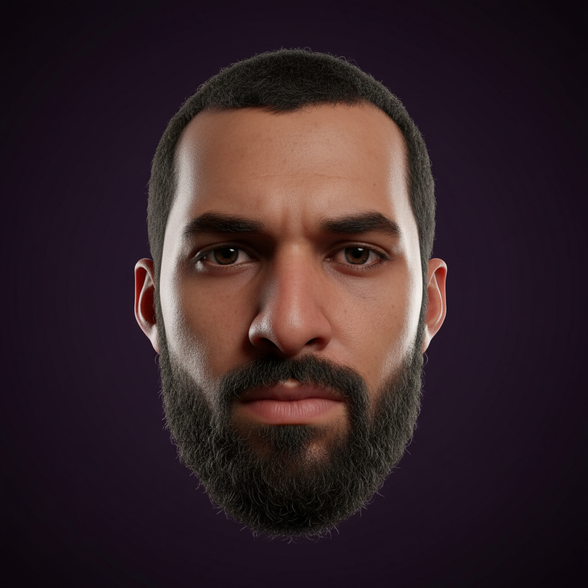
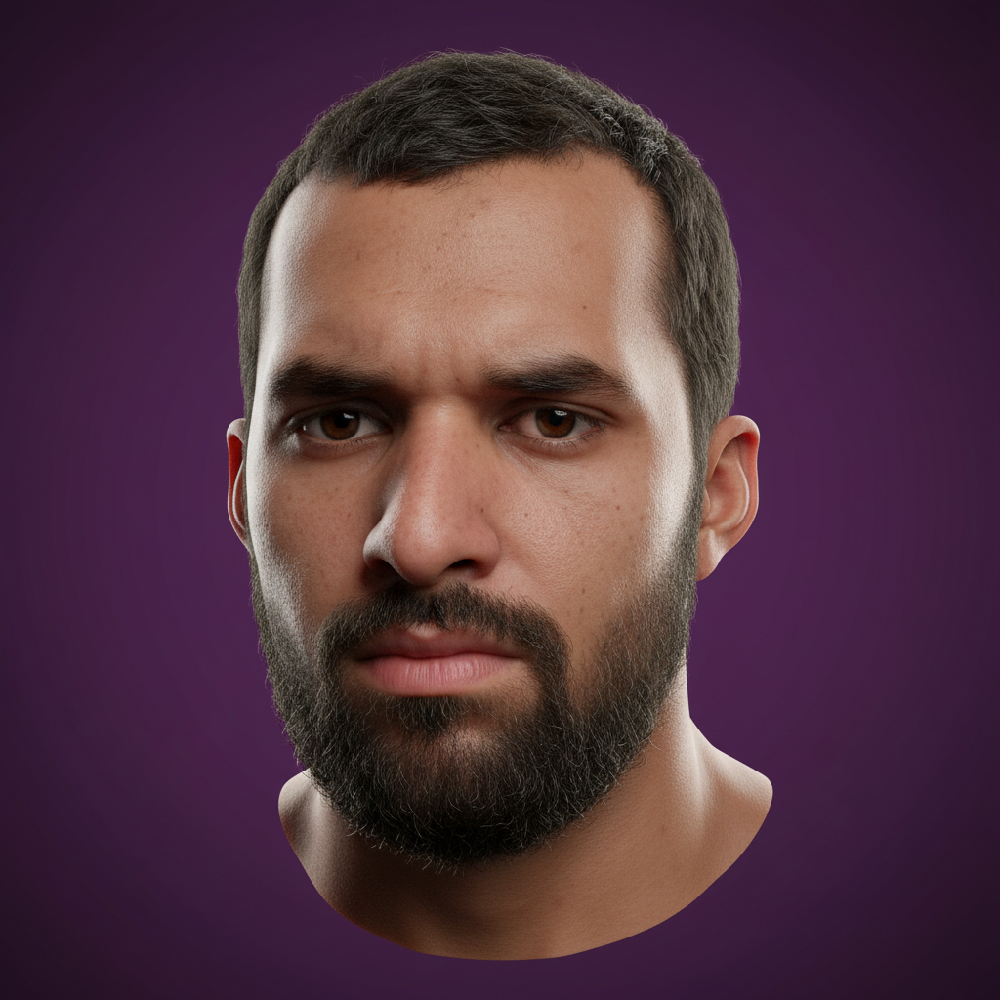

16K REAL!

Tão simples que qualquer pessoa aplica em 1 minuto: preserva 100% da sua identidade, expressão e fundo original.
QUERO O MÉTODO FOTO REAL 16K →

Envie qualquer foto comum do celular na sua IA de imagem.
Aplique o Comando Mestre que bloqueia deformações no rosto.
Receba sua foto nítida com textura real de câmera.